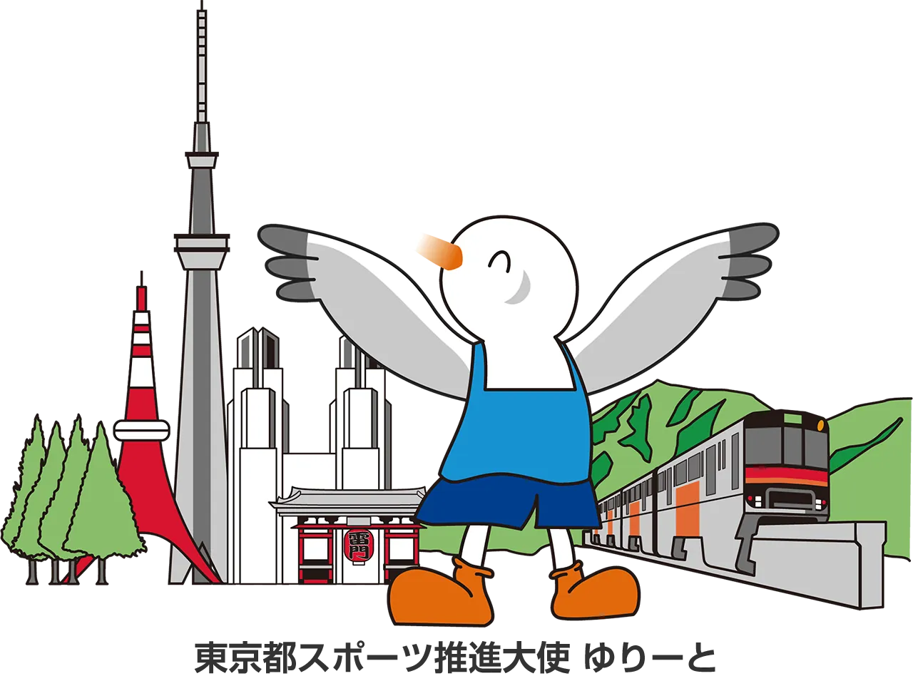

みんなで歩こう ウォーキングイベント｜ TOKYOユニバーサルウォーキング
本文の保存版（2026-11-22）
出典URL：https://tokyo-universal-walking.metro.tokyo.lg.jp/walking-event/
TOKYO ユニバーサルウォーキング
参加
無料
ゲストアスリートと一緒に、
みんなでバリアフリーコースを歩こう！

参加者には「ゆりーとマフラータオル」をプレゼント！
2025
1
/
11
土
開催
アート・文化・歴史を望める
上野・湯島コース
ゲストアスリート：東海林 直広選手
イベントは終了しました
2025
2
/
1
土
開催
妖怪たちがお出迎えしてくれる
調布コース
ゲストアスリート：羽賀 理之選手
イベントは終了しました
2025
1
/
11
土
開催
アート・文化・歴史を望める
上野・湯島コース
約2.2km
ゲストアスリートと一緒に上野公園から湯島までの約2.2キロのコースをウォーキングします。
ゲストアスリートによるトークショーも開催いたします。
野口英世像
辯天堂
各回25名（抽選）
午前の部
9:30
受付開始
10:00
アスリートトークショー
10:30〜12:00
ウォーキング
午後の部
12:30
受付開始
13:00
アスリートトークショー
13:30〜15:00
ウォーキング
集合場所
東京国立博物館
〒110-8712
東京都台東区上野公園13-9
※参加者の方には集合場所を追ってご連絡いたします。
集合場所マップ
参加条件
どなたでも参加できます
事前のお申込みが必要です。
定員は午前の部・午後の部、各回25名（抽選）となります。
参加費は無料です。
小学生以下は保護者の同伴、介助が必要な方は介助者の同伴をお願いします。
交通ルールとウォーキングマナーを必ずお守りください。
申込締切日：2025年1月4日（土）
ゲストアスリート
東海林直広選手
東海林 直広選手
デフサッカー・フットサル
プロフィール
1992年生まれ（31歳）
小学2年生の時に父親の影響でサッカーを始める。出身地の北海道では、冬季には体育館等室内でボールを蹴るため、フットサルやミニサッカーにも馴染んでいたが、中学まではサッカーをメインに。高校からはフットサルをメインに競技を転向し、今に至る。
主な戦績
第1回アジア太平洋ろう者フットサル選手権大会5位（1得点）、第2回世界ろう者フットサル選手権大会14位（6得点）、第7回アジア太平洋ろう者競技大会3位（6得点）、第2回アジア太平洋ろう者フットサル選手権大会2位（7得点）、第3回世界ろう者フットサル選手権大会 7位（3得点）、第23回夏季デフリンピック競技大会サッカー競技日本代表、第4回アジア太平洋ろう者サッカー選手権大会2位（1得点）大会優秀選手賞、第3回アジア太平洋ろう者フットサル選手権大会2位（7得点）、第4回世界ろう者フットサル選手権大会10位（5得点）、第4回アジア太平洋ろう者フットサル選手権大会3位（1得点）、第5回世界ろう者フットサル選手権大会3位（2得点）、第20回冬季デフリンピック競技大会（於トルコ・エルズルム）フットサル競技銀メダル
申込受付は終了しました
2025
2
/
1
土
開催
妖怪たちがお出迎えしてくれる
調布コース
約2.4km
ゲストアスリートと調布市内の約2.4キロのコースをウォーキングします。
ゲストアスリートによるトークショーも開催いたします。
調布町の総鎮守 布多天神社
天神通り
各回25名（抽選）
午前の部
9:30
受付開始
10:00
アスリートトークショー
10:30〜12:00
ウォーキング
午後の部
12:30
受付開始
13:00
アスリートトークショー
13:30〜15:00
ウォーキング
集合場所
調布クレストンホテル
〒182-0026
東京都調布市小島町1-38-1 PARCO内8〜10階
※京王線調布駅徒歩1分
参加条件
どなたでも参加できます
事前のお申込みが必要です。
定員は午前の部・午後の部、各回25名（抽選）となります。
参加費は無料です。
小学生以下は保護者の同伴、介助が必要な方は介助者の同伴をお願いします。
交通ルールとウォーキングマナーを必ずお守りください。
申込締切日：2025年1月25日（土）
ゲストアスリート
羽賀理之選手
羽賀 理之選手
車いすラグビー
プロフィール
1984生まれ（40歳）
高校卒業後、事故により受傷。入所していた国立リハビリテーションセンターで2005年よりウィルチェアーラグビーを始める。2009年にニュージーランドへ留学後、2010年に日本代表初選出。多くの国際大会でメダルを獲得。
主な戦績
2010年
世界選手権（カナダ開催）銅メダル
2014年
世界選手権（デンマーク開催）4位
アジアパラ大会（韓国開催）金メダル
2016年
リオパラリンピック 銅メダル
2018年
世界選手権（オーストラリア開催）金メダル
2021年
東京パラリンピック 銅メダル
2022年
世界選手権（デンマーク開催）銅メダル
2024年
パリパラリンピック 金メダル
申込受付は終了しました
地図で使用する画像
- ゆりーとの画像
https://tokyo-universal-walking.metro.tokyo.lg.jp/img/yurito02.webp